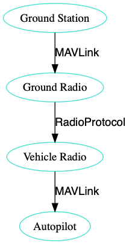
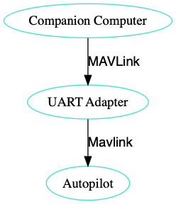
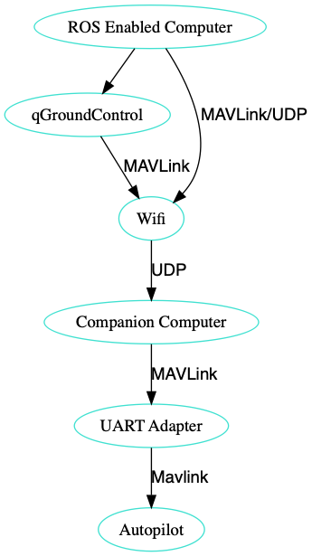

PX4 Dev Workshop
Table of Contents
1 수업
- 일시: 2018. 12. 28
- 목표: 실제 비행 환경에서 MAVROS 노드 실행
- 교재: https://goo.gl/sDfk3j
- 코치: 박동희 dongheepark@gmail.com
2 수업 진행
- 작성한 노드를 실제 비행에 적용
- PX4 오프보드모드 셋업
- 비행 테스트
3 수업 자료
오프보드 모드의 실제 비행은 위험하니, 주의깊게 읽고 설정.
3.1 오프보드 제어 펌웨어 셋업
오프보드 개발을 시작하기 전에 펌웨어 쪽에 필요한 셋업 2가지
3.1.1 1. RC 스위치를 오프보드 모드 활성화로 매핑
RC스위치로 OFFBOARD모드를 활성화 시키고, 비활성화 될경우에는 포지션 모드로 자동 전환이 되도록 한다.
3.1.2 2. 컴패니언 컴퓨터 인터페이스 활성화
SYS_COMPANION 파라미터를 921600으로 운영. 빠른 속도가 유리!
3.2 하드웨어 셋업
일반적인 오프보드 통신을 셋업하는 3가지 방식
3.2.1 1. 시리얼 라디오
- 한쪽을 autopilot의 UART 포트에 연결
- 한쪽을 ground station 컴퓨터에 연결

3.2.2 2. On-board 프로세서
autopilot에 연결하는 작은 컴퓨터는 UART를 통해 USB 어댑터로 연결

3.2.3 3. 온보드 프로세서와 wifi로 ROS에 연결
비행체에 부착하는 작은 컴퓨터는 UART USB 아답터를 통해 autopilot로 연결하며 ROS가 실행되고 있는 ground station에 WiFi 링크를 가질 수 있습니다. WiFi 아답터와 결합된 위 섹션에 소개한 어떤 컴퓨터도 가능합니다.
